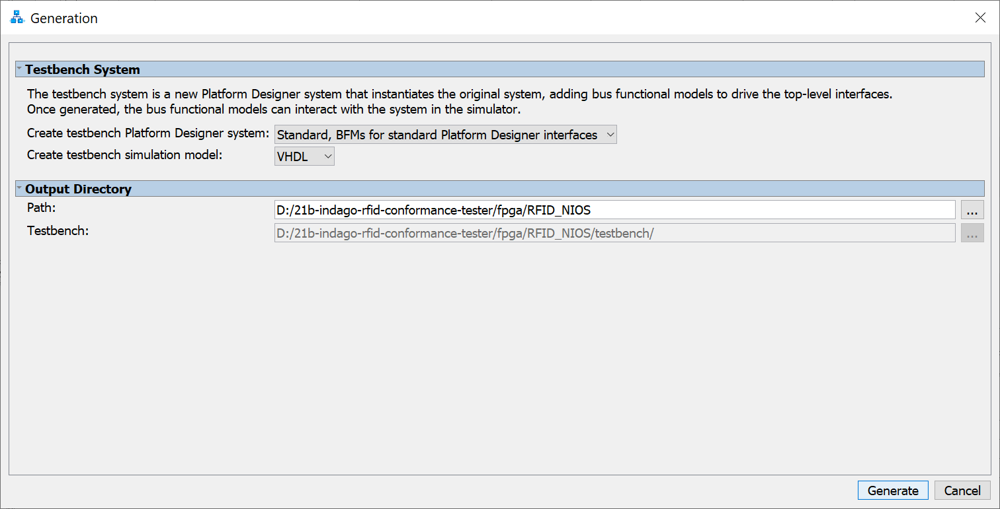
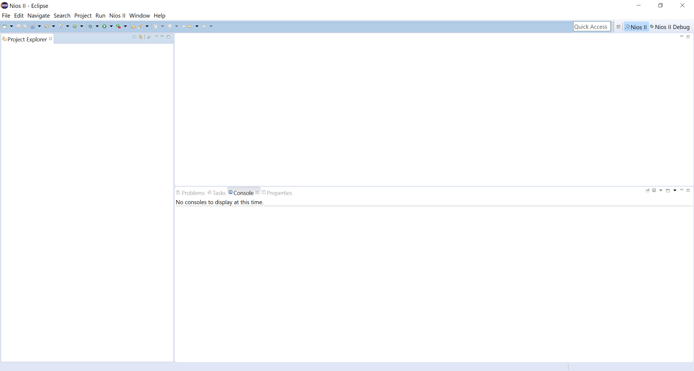
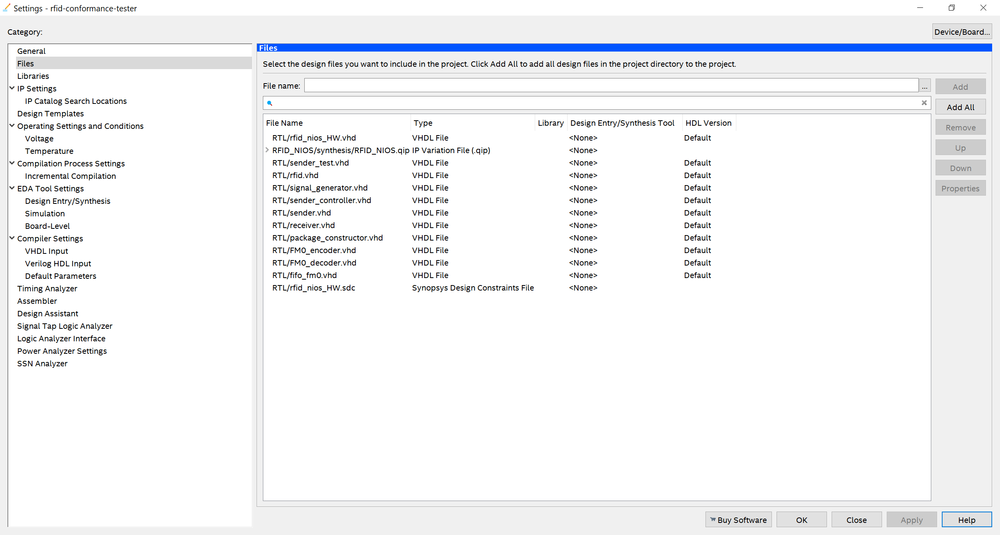
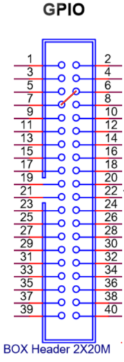

First, launch Quartus Prime. After launching, click on File ➡️ Open Project. A window will pop up, and you need to choose the rfid-conformance-tester.qpf file, located in the fpga folder of the repository. The video below shows how to do so.
Once the project has been opened, you can work on it; however, the steps to run the project depend on whether you want to simulate using ModelSim or whether you want to launch on the DE-10 Standard board.
To test and simulate the project on ModelSim, the first step is to check the files present in the project. Click on Project ➡️ Add/Remove Files in Project. It should look like the picture below.
After checking the files, go to Project Navigator on the left panel, click on the dropdown menu that says Hierarchy, then click on Files. After that, right-click on the RTL/rfid.vhd file, and click on the option that says Set as Top-Level Entity. Now you can click on the blue play button next to the stop button to start the compilation.
Once the project is compiled, click on Tools ➡️ Platform Designer. A new window should open. Find the RFID_NIOS.qsys file, and open it.
Once you've opened the file, it should show the project's design. On this window, click on Generate ➡️ Generate Testbench System....
Make sure the settings are as follows, and click on Generate on the bottom.

Next, you wanna open up the Nios II Software Build Tools for Eclipse. If it's your first time opening this tool, the Eclipse window will ask you to choose a workspace. Now the Eclipse window should be open with a blank workspace like the one below.

Now we need to import our projects into Eclipse. Go to File ➡️ Import, and it should show a window like the one below. Click on Nios II Software Build Tools Project ➡️ Import Nios II Software Build Tools Project, then click Next.
Now you need to click on the Browse button and look for the project. The projects are located at 21b-indago-rfid-conformance-tester/fpga/software. First, import the rfid_test project, then click Finish, and make sure that the Clean project when importing box is checked. Do the same steps for the rfid_test_bsp project.
After both projects have been imported, right-click on rfid_test_bsp ➡️ BSP Editor. It will open a window like the one below. Make sure that the options are all the same.
You also need to check the enable_small_driver box on the Drivers tab.
After checking the settings, click on the Generate button. Once you generated the BSP, right-click the rfid_test ➡️ Build Project.
If you had any errors, try cleaning both projects, generating the BSP and rebuilding the project.
Once the build is complete, go to Run ➡️ Run configurations. It should open up a new window. Right click on Nios II Modelsim, and click on New. A new ModelSim run configuration has been created, and you can click on Run to simulate. The image below shows the configuration settings.
You can also watch the video below, which shows the step-by-step process.
Important: If you want to launch the project on the DE-10 Standard board, a Quartus License is required.
To launch the project on the DE-10 Standard board, the first step is to check the files present in the project. Click on Project ➡️ Add/Remove Files in Project. It should look like the picture below.

If you are missing the RFID_NIOS.qip file, you can generate it using the Platform Designer. You can follow the same instructions used on the ModelSim guide to open the Platform Designer and open the project's design.
Once the design is open, click on Generate ➡️ Generate HDL.... The settings should match the ones present in the image below. After that, just click on the Generate button, and it should generate the IP variation file.
After checking the files, go to Project Navigator on the left panel, click on the dropdown menu that says Hierarchy, then click on Files. After that, right-click on the RTL/rfid_nios_HW.vhd file, and click on the option that says Set as Top-Level Entity. Now you can click on the blue play button next to the stop button to start the compilation.
After compiling, go to Tools ➡️ Programmmer to program the board. Be sure that the board is plugged in before opening.
If your board is not showing up on the Hardware menu on top, click on Hardware Setup, then double click on your board in the menu. After selecting your board, close this window.
Once your board is shown in the Hardware menu, click on the Auto Detect button on the left menu, and select the corresponding device name for your board (it is engraved on the chip, shown in the image below).
After selecting the corresponding device name, the program may show two chips: one named SOCVHPS and the other with your device. Double-click on the File tab next to the name of your device, and look for the rfid-conformance-tester.sof file for the compiled project, located on the 21b-indago-rfid-conformance-tester/fpga/output_files folder.
Once you selected the file, check the Program/Configure box next to your device as is shown in the image below, then click on Start to program the board. Once it's finished, you can close the Programmer window.
After programming the board, get a female/female jumper, plug one end on pin 6 of the GPIO header and the other end on pin 7 of the GPIO header, as shown in the images below.

Once the jumpers are connected, open up the Nios II Software Build Tools for Eclipse. You can follow the same steps shown in the ModelSim guide on how to do so.
After both projects have been imported, right-click on rfid_test_bsp ➡️ BSP Editor.Make sure that the options are the same as the ones present in the image below (they are not the same settings from the ModelSim guide).
The enable_small_driver box on the Drivers tab needs to be kept checked.
After checking the settings, click on the Generate button on the editor. Once you generated the BSP, right-click the rfid_test ➡️ Build Project.
If you had any errors, try cleaning both projects, generating the BSP and rebuilding the project.
Once the build is complete, go to Run ➡️ Run configurations. It should open up a new window. Right click on Nios II Hardware, and click on New. Once the configuration has been created, go to the Target Connection tab, and check if the settings are the same as the one shown in the image below. Once you checked the settings, you can click on Run to launch.
You can also watch the video below, which shows the step-by-step process.
You can also run a handshake version of the project using two DE-10 Standard boards. To do so, follow the same steps shown on the hardware guide until you reach the rfid_test project build. Before building the project, you need to find the tag.c and reader.c files, located in the fpga folder.
Choose one board to act as the tag, and one board to act as the reader; after that, replace the code present in the hello_world.c with the corresponding code (one board will have the tag.c code and the other will have the reader.c code).
After overwriting the code, build the project on each Nios environment. Once the projects are built, make sure that the boards are plugged as shown in the image below.
Once the pins are properly plugged, you can use the same run configurations created on the hardware guide to run the project.
Important: First, launch the tag configuration, and wait for the Nios II Console to print waiting for query. After that, you can launch the reader configuration.
You can also watch the video below, which shows the step-by-step process.
Firstly, you should create a fork of the original repository to work on. You can learn how to do so here.
After creating your own fork, you can open a pull request to this repository. The instructions on how to do it can be found here. After making your pull request, it will be reviewed by one of the team members, and if everything's ok, they will approve it. If there are problems with your pull request, the reviewer will inform you of them, and you can make the adjustments necessary.